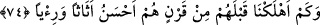

düşmanlarını da izzet ve rahatlık içerisinde bırakmak yakışmaz. Fakat durum bunun
tersidir.” dediler. Bu sözleriyle mü’minleri dinlerinden döndürmek istediler. Allah ise
onlara şöyle cevap verdi:
74. Onlardan önce nice nesiller helâk ettik ki onlar eşyaca ve gösterişçe daha
güzeldi.
“Onlardan önce nice nesiller” bir zamanda bir araya gelmiş, nice topluluklar “helâk
ettik ki onlar eşyaca ve gösterişçe” görünüş ve heybetçe “daha güzeldi.” Yâni Kureyş
kâfirlerinden önce de Ad, Semûd ve benzeri geçmiş ümmetlerden böbürlenen, dünyevî
lezzetler bakımından onlardan daha üstün nice nesiller vardı. Biz onları da çeşitli
azaplarla helâk ettik, yok ettik. Eğer onlara verdiğimiz şeyler, onların bizim için değerli
olmalarından dolayı olsaydı bu yaptığımızı yapmazdık.
Bu âyette çok açık bir tehdid vardır. Sanki şöyle deniliyor: Bu Kureyş müşrikleri de
onların başına gelenin benzerini beklesinler. Kâşifî der ki: “Ne malları ne de yüzlerinin
güzellikleri azabdan ve onları helâk olmaktan kurtarır.”
Malına da güzelliğine de güvenme
Mal bir gecede gider, güzellik solar ateş ile
et-Te’vîlâtü’n-Necmiyye’de (73 ve 74. âyet hakkında) şöyle der: Âyet, inkâr ehline ve
Allah ile güç bulan izzet ehline işâret etmektedir. “Onlara” hakîkatleri ve sırları
açıklayan “apaçık âyetlerimiz okunduğunda, inkâr edenler” hakkı inkâr ve alayla
örtenler, “iman edenlere” yani hakîkat ehlinden olanlara, onları hoşnut, nefisleriyle
mücâhede eden, tahammüllü, alçak gönüllü, Allah’tan korkan kimseler olarak
gördüklerinde, kendileri nimet içerisinde, kibirli, nefislerinin arzularına uyan, gülen ve
sevinçli kimseler olduklarından “iki topluluktan” bizden ve sizden “hangisinin
makâmı” dünyadaki derece ve mevkii, insanlar yanındaki değeri ve geçiminin rahat
olması bakımından “daha hayırlı,” mansıb ve hüküm yönünden “meclisi daha
güzeldir?” derler.”
Allah da onlara cevap olarak şöyle buyurdu: “Onlardan önce nice nesiller helâk
ettik” Yani onları dünya sevgisi ve nimetleriyle helâk ettik. Çünkü onları dünya
şehvetleri, dünya lezzetlerini tam olarak elde etme ve dünya makâmlarıyla üstünlük
duygusuna kapılma denizinde boğduk “ki onlar” yani inananlar “eşyaca ve gösterişçe”
yani dînî kemâlât konusunda istîdad ve onları hak etme bakımından sizden “daha
güzeldi.” Nitekim Rasûlullah (s.a.) şöyle buyurmuştur: “Dinde derin anlayış sâhibi
oldukları zaman Câhiliyye döneminde en hayırlı olanınız İslâm’da da en
hayırlınızdır.”[44]